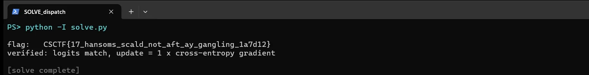

01Start point: what is in the archive
- What I found: I loaded it with allow_pickle=False so a malicious file can't run code on load. It is a 2-layer network, 50 inputs to 64 ReLU to 8 classes (global_W1, b1, W2, b2). The intercepted gradient has the same shapes (update_W1, b1, W2, b2), plus the logits and the label (0).
- Thinking: a 50-number input is small enough to be the dispatch text itself, one number per character.
- Result: the target is the input x of a one-sample network.
02Pivot: the math of the first layer's gradient
- What I found: for one training example x, the first layer computes z = W1 x + b1. Backpropagation gives dL/dW1 = delta * x^T and dL/db1 = delta, where delta is the error signal reaching each hidden unit. Every row i of the weight gradient is the input x scaled by delta_i, and the bias gradient is delta_i.
- Thinking: so x = update_W1[i] / update_b1[i] for any unit i whose bias gradient is non-zero. No optimisation is needed, just a division. The framing that neither the model nor the logits gives it up is a red herring, because the update alone leaks the input exactly.
- Result: a plan to recover x with one division per row.
03Pivot: recover x
- What I did: divided each weight-gradient row by its bias gradient. 30 of the 64 hidden units had a zero gradient (dead ReLUs, which carry nothing). The other 34 rows all gave the same vector to 5e-17.
- Thinking: the values were multiples of 1/255, so multiplying by 255 should give ASCII codes.
- Result: the codes 67 83 67 84 70 123 ... 125 decode to CSCTF{17_hansoms_scald_not_aft_ay_gangling_1a7d12}.

04Pivot: prove it is the real dispatch
- What I did: ran two checks. First, the shared model on the recovered x. Second, the true cross-entropy gradient for label 0 at those logits.
- Thinking: a coincidence would not reproduce the intercepted numbers exactly.
- Result: the model reproduces the intercepted logits exactly, and the true gradient equals update_b2 with scale 1, so the update is a plain gradient with no noise or clipping.